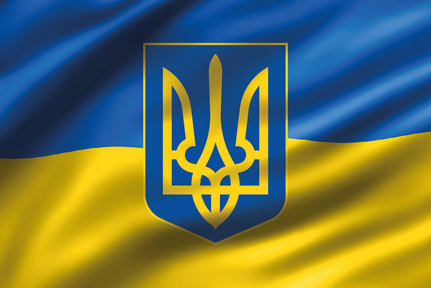
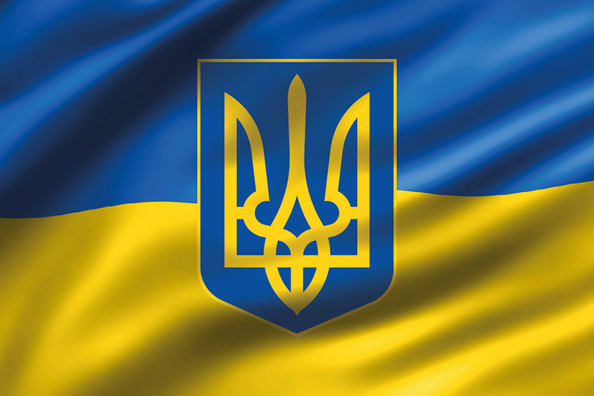
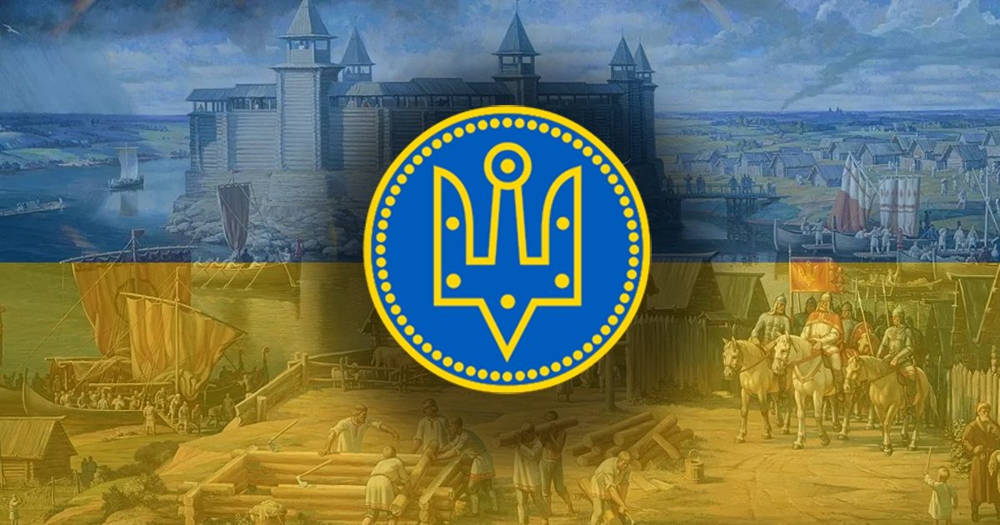
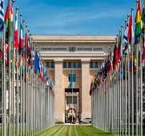

Держава у Східній та частково Центральній Європі. Охоплює південний захід Східноєвропейської рівнини, частину Східних Карпат і Кримські гори. Межує з Румунією й Молдовою на південному заході, з Угорщиною, Словаччиною та Польщею на заході, з Білоруссю на півночі та з Росією на сході й північному сході. На півдні омивається Чорним та Азовським морями. Площа становить 603 700 км². Найбільша за площею країна серед повністю розташованих у Європі .
Станом на перепис 2001 року, населення України становило 48,4 мільйона осіб. Основне й корінне населення України — українці (77,8 % населення на 2001 рік[9]). Також офіційно корінними народами України є кримські татари, караїми та кримчаки. Крім того, значною меншиною є росіяни (17,3 % населення на 2001 рік). Історично однією з найбільших меншин в Україні були також українські євреї.
Сучасна Україна, обравши за свій герб знак княжої держави Володимира Великого, проводить свою державність від Русі київських князів династії Рюриковичів IX—XIII століть[15]. За часів свого розквіту, у X—XI століттях, Русь була однією з найбільших і найвпливовіших країн Європи[15]. Після монгольської навали спадкоємцем Русі стало Королівство Руське XIII—XIV століть, що згодом було поглинуте Великим князівством Литовським і Королівством Польським. Велике князівство Литовське стало фактичним продовжувачем традицій Русі, в його складі руські землі користувалися широкою автономією. Після об'єднання литовської та польської держав у 1569 році, більшість українських земель перебувало у складі федеративної Речі Посполитої.
Відновлення української державності відбулося під час великого козацького повстання, відомого як Хмельниччина, з 1648 року, наслідком якого стало утворення автономної козацької держави, Гетьманщини, або Війська Запорозького. Обмежену автономність Гетьманщина зберігала до 1764 року, при тому частина земель відійшла до Речі Посполитої, а інша частина знаходилася під протекторатом Московського царства, які поступово поглинули козацьку державу. Згодом українські землі були розділені між Російською імперією та Австро-Угорською монархією. Державою кримських татар, одного з корінних народів України, був Кримський ханат, що існував на південних українських землях у 1441—1783 роках за правління династії Ґераїв. У 1783 році був анексований Російською імперією.
Україна — промислово-аграрна країна з переважанням продукування сировини. Вона є одним із провідних експортерів деяких різновидів сільськогосподарської продукції. Господарський комплекс країни включає видобування корисних копалин, деякі галузі машинобудування, чорну й кольорову металургію тощо. Україна є потужним виробником електроенергії. Значні позиції займає виробництво військової техніки та зброї.
Україна є одним із членів-засновників Організації Об'єднаних Націй, а також членом понад сорока міжнародних організацій, зокрема ОБСЄ (1992), МВФ (1992), МБРР (1992), СОТ (2008), Ради Європи (1995), кандидат на членство в ЄС (з 2022).

З 20 лютого 2014 року Україна захищається від збройного вторгнення Російської Федерації, складовими якого є анексія Криму та окупація частини Донецької та Луганської областей. Новий етап російсько-української війни розпочався 24 лютого 2022 року із широкомасштабним російським вторгненням в Україну.